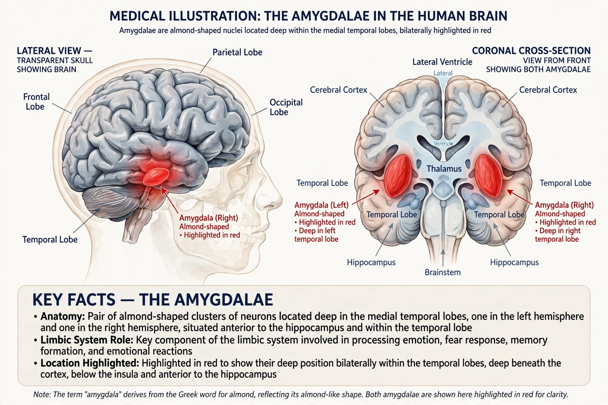

| Amygdala | |
|---|---|
 | |
| Part of | Limbic system, temporal lobe |
| Components | Basolateral complex, central nucleus, medial nucleus, cortical nuclei |
| Function | Emotion processing, fear learning, memory modulation |
The amygdala (plural: amygdalae; from Latin corpus amygdaloideum, from Greek ἀμυγδαλή, "almond") is a paired cluster of nuclei located deep within the medial temporal lobes of the brain. It is a central component of the limbic system and plays a key role in processing emotions — especially fear — in forming emotional memories, and in decision-making and social behaviour.
Each amygdala is an almond-shaped mass of grey matter containing roughly a dozen nuclei. The basolateral complex receives sensory information from the thalamus and cortex; the central nucleus drives autonomic and behavioural responses via projections to the hypothalamus and brainstem; the medial and cortical nuclei process olfactory information. The amygdala connects extensively with the hippocampus, prefrontal cortex and striatum.
The amygdala is best known for fear learning: in Pavlovian fear conditioning, animals learn to associate a neutral cue with an aversive event, and amygdala circuits store and express that association. It also responds to other emotionally salient stimuli, both negative and positive, and modulates the consolidation of memories in other brain regions — which is why emotional events are remembered more vividly. Walter Cannon's early work on emotion already implicated deep limbic structures of this kind in the fight-or-flight response.
Amygdala dysfunction is implicated in anxiety disorders, post-traumatic stress disorder, depression and autism spectrum conditions. Bilateral amygdala damage, as in the rare Urbach–Wiethe disease, can abolish the normal experience of fear: the much-studied patient S.M., whose amygdalae were destroyed by calcification, showed a striking inability to recognise or feel fear in most situations. Enlarged or hyperreactive amygdala responses to threat are a recurrent finding in neuroimaging studies of anxiety.
The amygdala was identified in the early 19th century by Karl Friedrich Burdach. Its behavioural importance emerged from the Klüver–Bucy syndrome in monkeys (1937) and from later lesion and recording studies that placed it at the centre of emotional processing.
See also: Walter Bradford Cannon · Limbic system · Precision medicine